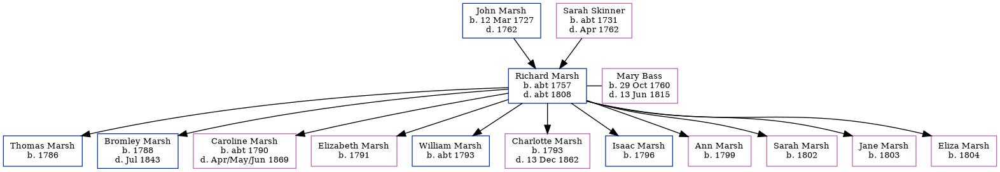

Richard Marsh c1757 - c1808 [ Home ] | [ Calendar ] | [ Surnames Index ] | [ Family History ]The child of John Marsh and Sarah Skinner Richard Marsh , the 4 times great-grandfather of Nigel Horne , was born in Elham, Kent, England c. 1757, was baptized there on Aug 21, 1757 and was orphaned in 1762 by the death of both parents in that year her.
He married Mary Bass (with whom he had 11 children: Thomas , Bromley , Caroline , Elizabeth , William , Charlotte , Isaac , Ann , Sarah , Jane and Eliza ) in Wootton, Kent, England in 1780
He died c. 1808 in Elham and was buried in Kent on Dec 30, 1808.
Parents John was born on Mar 12, 1727Sarah was born c. 1731Children Thomas was born in 1786Bromley was born in 1788Caroline was born c. 1790Elizabeth was born in 1791William was born c. 1793Charlotte was born in 1793Isaac was born in 1796Ann was born in 1799Sarah was born in 1802Jane was born in 1803Eliza was born in 1804Media Canterbury Marriage Banns Transcription - GBPRS-CANT-M-94052500-2 Canterbury Marriages Transcription - GBPRS-CANT-M-97151149-2 Family Tree Interactive Map
Map
Generated by ged2site . Last updated on Feb 18, 2025